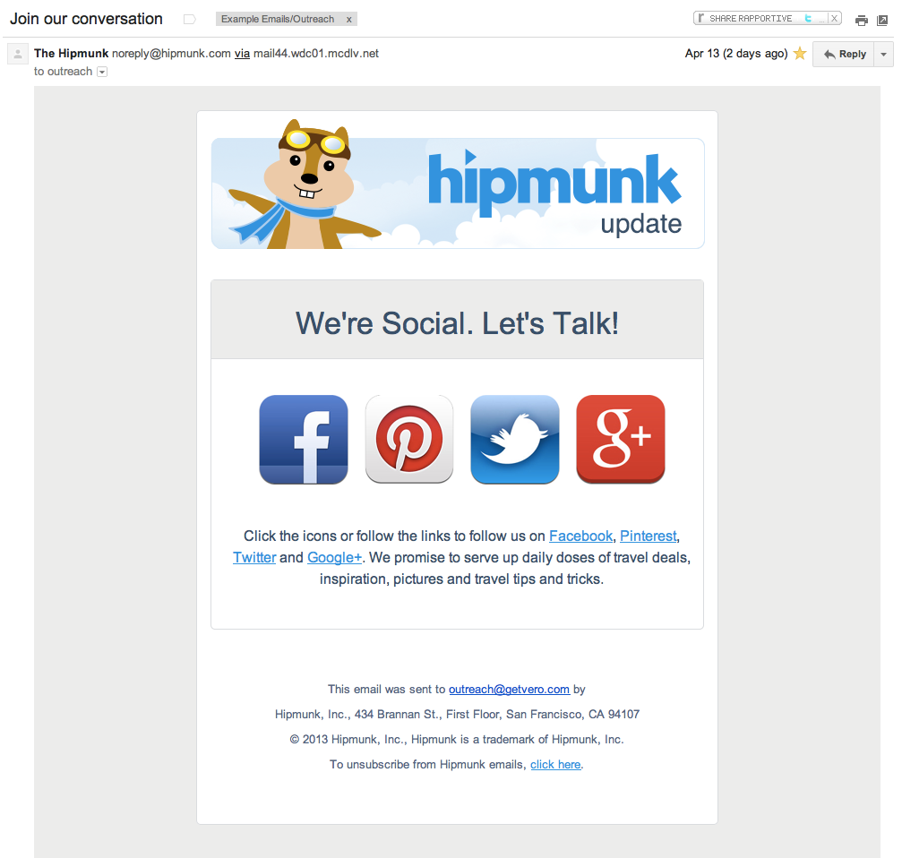

It’s time for some email marketing examples from the real world.
I’ve selected 10 emails that came through my inbox recently and am going to focus on conversions and how each campaign performs.
For each of the campaigns listed I’ve pulled together a screenshot as it arrived in my inbox, a list of things the campaign does well and a series of ideas or hypotheses the creators could test in order to improve conversions.
These examples should give you some inspiration for your next campaign.
Each of these campaigns was sent to me publicly. No email is perfect and there are always things to test. The best way to get better is to try and try again!
1. KISSmetrics’ blog update
Thoughts
This email is short, sweet and gets to the point. It’s a good email: it gives enough of a flavour of the blog post to leave you wanting more.
There are lots of reasons this is a good campaign yet it also feels a little ‘cold’. The KISSmetrics blog is full of genuine, quality posts and this blog update email doesn’t to a great job of conveying this.
The primary call to action (to read the post) could also be bolder: it is overpowered by the call to action to sign up to KISSmetrics.
Testing ideas
- Add a button: Try making the “Click to continue reading…” a button.
- Highlight the blog post: Make the font-size of the heading and the blog post text larger than the font-size of the surrounding links by a few points.
- Conflicting CTAs: Move the ’email us any time’ into the footer – right now there are really three competing calls to action in the middle of this campaign.
- Include an image: Include an image from the post (if there is one). Many of the posts on the KISSmetrics blog feature great images and examples so why not include one of these in the email?
Site: KISSmetrics
2. DealsDirect
Thoughts
As far as ‘sale’ emails go this is a fantastic one.
Usually they are cluttered, mention 1,000 products in the one email and, as such, have no clear call to action.
This campaign does focus on a primary CTA (“Shop Now”) and ensures the entire image is clickable. You can’t see it up above but the ‘alt tags’ on their images are superb: the email is navigable even without loading the images.
Finally, I really like the use of the social call to action under the “Shop Now” link.
Testing ideas
- Target the iPhone CTA: I’ve never opened a DealsDirect email on my iPhone so it looks as though the bottom link is being shown to everyone. It would be interesting to test only showing the ‘Download the iPhone app’ to primarily iPhone users. Why? This would obviously increase the CTR for that particular link (more targeted) and may also increase the CTR on the primary call to action to “Shop Now” by removing the iPhone app link for irrelevant users. Here’s a great case study where this held true:
- Remove the second CTA: Remove the secondary CTA (the link to the rugs). Would the overall effect on sales be bigger if this were removed? There is a possibility this secondary CTA is affecting overall CTRs – but, then again, it might mean the total sales from this one email are higher.
- Smaller footer: Tidy up the footer. There is a lot of relevant information in the footer but it is a bit cluttered / long-winded. Remove some of the clutter!
Site: DealsDirect
3. Scottevest
Thoughts
Every day Scottevest do a sale. I like that the email shares the technical aspects of the clothing, exactly what Scottevest is known for.
The header, the body image and the footer link all point to the daily sale page, meaning there is less ‘link leak’ as customers can click-through to the place you want them to see.
Testing ideas
- No real CTA: A big red button would be much better than the subtle ‘Daily Sale’ link at the end of the email. Sure, it’s hard not to click something in this email but we all love a good button – it’s UX 101 – so why not include one!
- Whitespace: There are only two paragraphs but they look daunting: they’re chunky. Despite telling a good story I’d shorten or split up these paragraphs. It might also make sense to include some of the images up top throughout the body, to break things up. Using bold and italics goes a long way too.
- Make the header smaller: Get straight into the action! Regulars will see this email every day, there isn’t a need to have such a large ‘branding’ section at the top of each email. Get to the content.
Site: Scottevest
4. OkCupid
Thoughts
It’s pretty hard to critique this campaign. It is a simple automated email and it’s purpose and call to action are very clear. The includsion of the re-assuring pionts at the bottom of the email is an excellent idea. This ‘Question and Answer‘ format has worked wonders for people in the past.
Including the face of the girl/guy in question is always a solid conversion strategy: people relate to people. Making the face, name and button clickable is also a solid move.
Testing Ideas
- Button colour: OkCupid has very strong branding colours (pink, blue and light blue) but it’d be worth testing the colours of this button. Would green work better than blue?
- Re-iterate the CTA: Make “Go get ’em” clickable at the bottom of re-iterate the CTA by including a second button / some other link.
- Language on the button: Perhaps ‘Check her out’ doesn’t resonate with everyone. This could even be inferred from the questions each user has answered. By building individual profiles based on what answers customers have provided the CTA could be changed on a customer-by-customer basis. This would be very powerful.
Site: OkCupid
5. Slideshare
Thoughts
Like the OkCupid email I imagine this email is effective at increasing engagement for Slideshare as it is triggered by a distinct event and has a solid goal: to get customers to follow other customers.
It’s short, simple, to the point and the inclusion of the face / display picture is, again, effective. Rock on Slideshare and trigger-based emails!
Testing Ideas
- That button: Slideshare could test both the size and colour of the button. They could also test the copy, e.g. ‘Follow Fernando’ or ‘Follow them back’. Follow is logical copy but encouraging click-throughs by highlighting the benefits or influencing psychology is always worth testing. In this case, including the name or suggesting reciprocation would play on our guilt!
- Clean up the template: The spacing on the template is a little weird as is the inclusion of ‘The Slideshare Team’. Sometimes the inclusion of a footer that signs off ‘The Team at XYZ’ can in fact seem colder than not including one at all. This can have a negative impact.
- Make the benefit MORE obvious: Why should I follow Fernando back? Has he done something for me? Is his content good? The primary motivator in this instance is likely to be ‘guilt’ – i.e. wanting to return the favour. Another example might be highlighting his followers. If Fernando has 1,000 followers it’s highly likely I will want to return the favor: this is someone with influence!
- Secondary CTA: I’m never a big fan of multiple calls to action but the inclusion of the very small ‘Follow your LinkedIn contacts on Slideshare now’ is an extremely interesting idea. This is actually a very powerful feature for Slideshare / LinkedIn. They should consider testing this CTA as the primary CTA in different versions of the email.
Site: Slideshare
6. Warby Parker

Thoughts
A smooth email from the gang at Warby Parker. Lots done well here: a clear call to action, individual links to both male and female glasses / ranges, repeated CTA, a simple footer and a beautiful, on-brand image at the top. THe template is very clear an structured as well. On the whole it’s hard to suggest too much here.
Testing Ideas
- Male vs. Female: Having two separate versions of this campaign could lift click-throughs. Although there are male and female versions of each pair of frames WP could test the images (colours) shown and the links would be more direct.
- Move the ‘View in browser’ link: Something across the board, having this link at the top can be useful but can also lead to this, at least in Gmail:…not always ideal, it’s worth considering if the trade-off is worth it for you.
- The image map is not ideal: Due to the way they’ve used the images in this email, when images are turned off you see the following:…this could be avoided if individual images were used and ALT tags were applied. In this way the user has a chance to understand what the email is about even without enabling images.
Site: Warby Parker
7. Canon
Thoughts
On the whole this email feels a bit ‘salesy’. The colours, the quality of the image and the style of the product image all feel like something fresh out of a brochure.
There are positives here too. The email has one, clear call to action, you can click all of the images as well as the CTA button at the bottom. I also like that the footer is kept reasonably clean by linking to the T&Cs rather than trying to cram the contest conditions into the footer (though this does depend on your local laws).
Having an image of what I can win is also very clear and a great way to display the benefits of entering, always important when trying to get customers to engage.
Testing Ideas
- False personalization: I’m all for personalization, on many fronts, but using ‘Chris Hexton’ (first and last names) feels wrong and is clearly false personalization. This articles gets into detail on better ways to personalize emails using event-based rules to give you ideas outside of using your customers’ names!
- Add urgency: It’s great that Canon include that the deal ‘ends by midnight’ but they don’t make a big enough deal of it! Have some HUGE numbers saying “XX Hours To Go” or similar. Include this at the top and the bottom.
- The image at the top: Experimenting with the image used at the top might be worth while. Including a smaller version of the product could still get across the prize in question whilst including an image with people might lead to a more relatable campaign and, in turn, higher click throughs.
Site: Canon
8. Hipmunk

Thoughts
Hipmunk have a great brand, so it’s great to see them using their mascot in the title. This familiarity is important for brand building and for driving engagement with tis email. If there was ever an implementation of ‘big buttons’, this is it. The calls to action are really clear in this email and that is something we don’t see enough. I also like that they re-link to each of the platforms when they mention the names of each social network underneath the icons.
Testing Ideas
- An explanation: This email felt like it came ‘out of the blue’ a little. I have no real idea why I received it at this particular time, what triggered it, etc. For this reason I think the success of the email might be enhanced by providing a reason to follow Hipmunk. A contest, some announcement I want to engage with, a tip or trick, etc. Give me a reason to convert.
- Too many options? Having a single icon such as ‘Follow us on Facebook’ might lead to a higher level of engagement. It’d be worth testing each platform (against a clearer benefit) and seeing which gets the highest response in this form of email. It would also allow them to drive engagement on each platform independently by sending more emails over time. Don’t confuse the customer.
Site: Hipmunk
9. CafePress
Thoughts
Another good example of the sort of email campaign that is usually extremely cluttered, over the top and confusing. This email is effective at conveying the 80% off sale (on top of already reduced prices), it has a good quality image featuring real people that are just like me and the colours are all very ‘friendly’.
Again, most of the images and buttons (i.e. 80% of this email) are clickable. The inclusion of the social links is also savvy.
Testing Ideas
- What is in the footer? It feels like there is wayyyyy too much text down there. Keep it simple!
- Make the button more distinct: The button ‘Shop Now’ could be in higher contrast with the rest of the image. Although the entire image is a link buttons really ‘anchor’ the call to action. Embrace this.
- Two deals feels confusing: It feels confusing to have the second link and mention of ‘10% off’ at the bottom. 10% off what? On top of the 80%? On top of the already reduced prices? I think this detracts from the email and goal. The same goes for Cafepress groups. It’s not a bad idea to include this, but it’s quite unclear what it is, if I’m not already familiar!
- A/B test popular searches: The popular searches is a quality and logical set of links to include here: it provides a shortcut to the items on sale. It would be interesting to A/B test this with specific images of products or, even better, with unique HTML / product listings per-user.
Site: CafePress
10. Mixbook
Thoughts
A long-form email, these can be tricky to get right. What I really like about Mixbook’s campaign is that the template is very clear and structured and the call to action is obvious. THe big ‘30% off everything’ is excellent and each of the sections clearly outlines a different product to which you can apply this offer.
The ‘gift guide’ concept is actually helpful and a great reason to use the long format. Plus there are people’s faces EVERYWHERE. This is fantastic. The use of urgency with ‘5 days only’ is also clear, having used big font, though perhaps it could be a more legible color.
Testing Ideas
- More obvious individual calls to action: The little arrows next to each product in the gift guide could be bigger, to encourage click throughs.
- CTA text: “Get Started Now” is quite clear but could perhaps be clearer and focus more on the benefits: “Get your Mom something great” or “Make your Mom’s Day” for example.
- Test the subject: I wonder if a subject with a higher focus on the benefits would work more effecitvely. Similar to the CTA, focus on ‘Get your Mom something awesome this Mother’s Day’ might work better than focusing on the included gift guide with ‘Mother’s Day Gift Guide’ which is a ‘feature based’.
Site: Mixbook
What do you think?
What would you test on these campaigns? What do you love?
Reviewing the work of others’ email marketing campaigns gives lots of great ideas for testing your own so always be on the lookout!